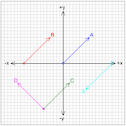

This model shows five different vectors on an xy-plane. Students are asked to rank various properties of the vectors. To help with comparisons, the vectors can be dragged from their starting positions.